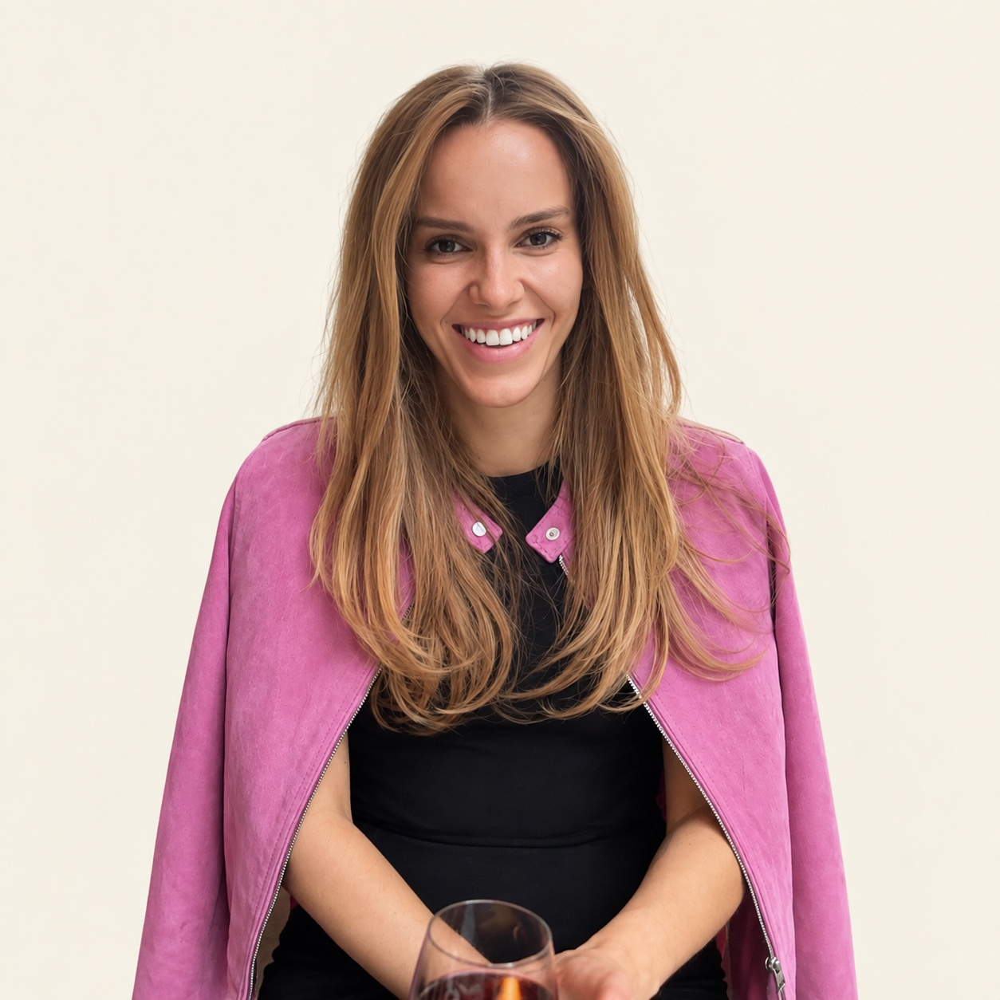

I work with founders when growth has made the business harder to run.

I build the structure growth has outpaced: ownership, management rhythm, people, delivery, risk and the systems that let the business run without everything coming back to the founder.
Built the operating structure behind a ~£5m growth trajectory, spanning organisation design, delivery, people, governance, risk and international expansion.
Scaling the operating model behind ~£5m growth.
↗What happens between a decision and the business expected to carry it out.
Read Operating Judgement ↗My background spans operations, commercial, people, governance and risk. I hold an LLB in International & European Law. My job is often to see the connection early enough to do something about it.
You don't need to know which job title you need.
Tell me the problem.